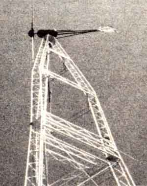

For many folks, a marriage of wind and sun may be the best alternative energy system going!
For about three years now, a rebuilt, 1,800watt Jacobs windplant has been providing much of the energy used by our gardeners in their Eco-Village residence. And despite our fickle North Carolina winds - which are made still more unreliable by the disruptive effect of the terrain on air currents at our 622.4-acre research center-that old bird has managed to keep twelve 790 amp-hour batteries charged from late September through May of each year.
The power stored in those series-wired cells is used to run lights and several small 12-volt appliances in our growers' 32'-diameter yurt. However, to date, the use of the wind--generated electricity has been limited by the amount and type of power available.
Our original scheme for battery-wiring matched the Jacobs' rated output of 32 volts by linking 16 two-volt cells in series. Not only was the generator unable to push much power through our 450 feet of doubled No. 2 aluminum transmission wire at that voltage, but the availability of 32-volt hardware was also quite limited.
Consequently, in 1982 we switched the batteries to 24-volt wiring and arranged to tap off the bank for 12 volts positive or negative (as shown in the accompanying illustration). This approach has kept line loss to a tolerable level at our normal output (10 to 20 amps), allowed the generator to begin sending a usable charging voltage at a lower wind speed, and permitted us to install common 12-volt equipment. The lower-voltage juice is, in other ways, definitely less than ideal: The consequent higher amperage, for example, results in so much resistive power loss that the aluminum cable is effectively turned into a space heater . . . but it has proven to be our only economical choice, since stouter cables cost $1.00 or more per foot.
Our sole significant hardware reliability problem occurred on two occasions, when lightning damaged the blocking diodes (devices that prevent stored battery current from powering the generator during calm spells). We're now fully alert to the fact that if the blades spin frantically on a dog day in July - one that happens to follow a violent electrical storm - trouble has struck again. Thus far, we've been unable to avert the problem completely, but we have come up with what we hope will be a more "expendable" circuit by wiring an inexpensive wafer rectifier parallel to the $30 diode. Lightning-induced surges should burn out the legs costly device first.
USING WHAT'S THERE
Because the winds in our area are typically weak during the summer months, our yurt dwellers have had to boost the battery charge level periodically with a motor-driven generator. Summertime here in the South does offer another abundant resource, though, and plans are now in the works to supplement the zephyr power with photovoltaic electricity. With this hybrid system, we hope to be able to supply power not only for our full-time soil-diggers but also for their apprentices . . . who will be moving into the larger yurt that's just down the hill.
In the meantime, our Eco-Village windpower experts caution any of you who are considering the installation of a generator to check out your resource carefully before making the investment. They warn that even though the weather station in your area may report regular power-producing breezes, the topography and vegetation at your site may thoroughly disrupt those currents. Therefore, before you plunk down your money for a- machine, monitor the winds at your location (and do so at the elevation at which the blades of the plant will be located) for at least a year. Back in MOTHER NO. 68 (on page 176), TJ Byers told us how to build a cup anemometer for less than $20 . . . but even if you pay $200 for a commercial model, it will be money well spent. (Publications such as Alternative Sources of Energy, Dept. TMEN, 107 South Central Avenue, Milaca, Minnesota 56353 and Find Energy Digest, Dept. TMEN, Box 306, Bascom, Ohio 44809 regularly carry ads from numerous anemometer manufacturers and feature a wealth of editorial information about wind energy in general.)
Then, if you find that there's enough wind to warrant investing in a turbine, you might want to have a look at the plans for Marshall Price's basement-built windplant that was featured on page 130 of MOTHER NO. 84. The detailed construction drawings are available - for $15.00 plus $1.00 for shipping and handling - from Mother's Plans, P.O. Box A, East Flat Rock, North Carolina 28726.
|
 STAFF PHOTOS MOTHER's 1,800 watt Jacobs windplant has been ""on call"" 24 hours a day for over three years now. BELOW.' Until we implement our planned supplemental photovoltaic system, a portable generator and charger will still be used occasionally to boost the batteries throughout the often windless summer month. |
|
|